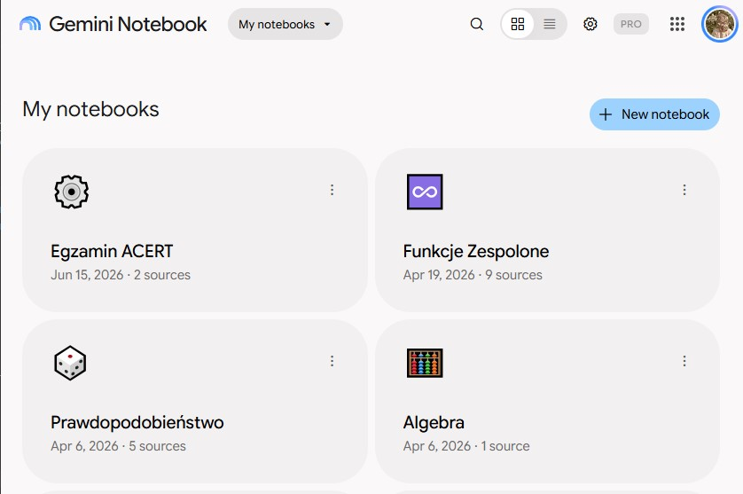
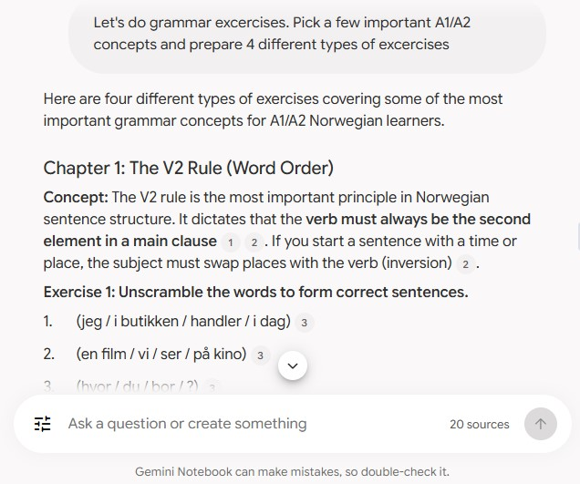
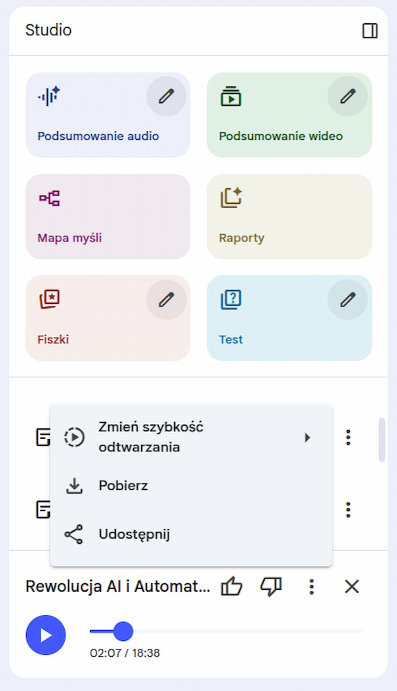
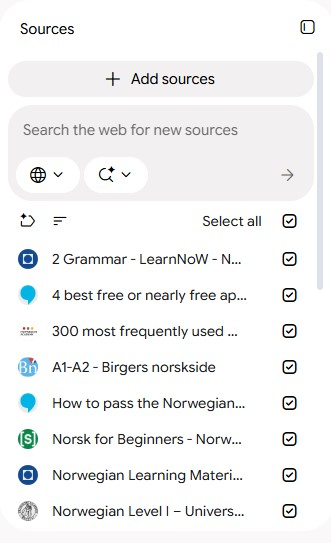

Notebook LM – spersonalizowana baza wiedzy i interaktywny tutor
Notebook LM (rozwijany przez Google również jako Gemini Notebook) to zaawansowane narzędzie badawczo-edukacyjne oparte na architekturze RAG (Retrieval-Augmented Generation). W przeciwieństwie do klasycznych modeli językowych, które generują odpowiedzi na podstawie ogólnych zasobów internetu, system ten operuje wyłącznie na zamkniętej bazie źródeł dostarczonych bezpośrednio przez użytkownika. Pozwala to na wgrywanie obszernych plików PDF, skryptów wykładowych czy prezentacji i tworzenie z nich dedykowanych, tematycznych notatników.
Kluczową zaletą takiego rozwiązania w pracy akademickiej jest wyeliminowanie zjawiska tzw. halucynacji modelu. Każda wygenerowana odpowiedź opiera się ściśle na przesłanych materiałach i jest opatrzona precyzyjnym przypisem. Kliknięcie w odnośnik natychmiast przenosi użytkownika do konkretnego akapitu w oryginalnym dokumencie, co gwarantuje pełną wiarygodność podczas nauki przedmiotów ścisłych oraz języków obcych.




Jak wykorzystuję Notebook LM w nauce?
1. Błyskawiczne przeszukiwanie skryptów matematycznych
Na studiach, naszym podstawowym źródłem materiału są prezentacje z wykładów i skrypty z ćwiczeniami. Tworząc osobne notatniki dla poszczególnych przedmiotów (takich jak Funkcje Zespolone, Prawdopodobieństwo czy Algebra), mogę szybko wyszukiwać konkretne definicje, twierdzenia i własności bez konieczności ręcznego wertowania obszernych dokumentów PDF. Przypisy pozwalają mi od razu zweryfikować pełny kontekst danego wzoru w materiałach wykładowcy.
2. Interaktywny tutor w nauce języka norweskiego
Notebook LM doskonale sprawdza się również poza naukami ścisłymi. Wgrałam do niego kilkanaście internetowych źródeł do nauki, dzięki czemu praca z materiałem przypomina zajęcia z indywidualnym tutorem. Narzędzie pomaga mi płynnie przechodzić przez kolejne zagadnienia gramatyczne, tłumaczy zawiłości na bazie przykładów ze źródeł oraz wspiera mnie podczas rozwiązywania zadań, odwołując się wyłącznie do słownictwa i reguł wprowadzonych w danym rozdziale.
3. Przyswajanie wiedzy w formie słuchowej (Audio Overview)
Jedną z najbardziej wartościowych dla mnie funkcji jest możliwość generowania podsumowań głosowych z wgranych materiałów. Ponieważ najlepiej przyswajam wiedzę ze słuchu, opcja przekształcenia suchych notatek czy rozdziałów podręcznika w dynamiczny podcast stanowi ogromne ułatwienie. Pozwala mi to na efektywne powtarzanie teorii i utrwalanie materiału w dowolnym miejscu, bez konieczności patrzenia w ekran.
4. Porada: Tematyczna separacja i selekcja źródeł
Aby maksymalnie wykorzystać potencjał programu, warto utrzymywać ścisły podział notatników na konkretne przedmioty lub egzaminy (np. osobny zbiór na Egzamin ACERT z języka angielskiego). W obrębie jednego notatnika niezwykle przydatna jest funkcja czasowego odznaczania wybranych plików w panelu bocznym przed zadaniem pytania. Zawężenie kontekstu tylko do jednej prezentacji lub wybranego rozdziału sprawia, że model nie miesza oznaczeń z różnych działów i udziela znacznie bardziej precyzyjnych odpowiedzi.
Podsumowanie
Notebook LM zmienił mój sposób pracy z literaturą akademicką i podręcznikami. Łącząc analityczne możliwości sztucznej inteligencji z pełną wiernością załączonym źródłom oraz świetnymi funkcjami audio, stanowi niezastąpione narzędzie, które dostosowuje formę przekazywania wiedzy do moich indywidualnych predyspozycji.